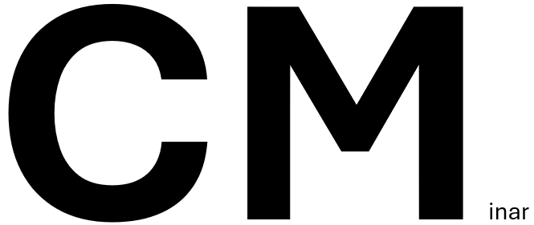

Image courtesy of Danny Anderson
Starting on February 3, we will meet on Mondays at 1:30 pm in Avery 19
In anticipation of Bhargav Bhatt's Rowlee lecture in March and Ray
Heitmann's retirement conference in April, we are running a seminar
on Big Cohen-Macaulay modules.
Current Schedule
Friday, January 31: Anna Brosowsky spoke on
regular sequences, depth, and Cohen-Macaulay rings/modules
Monday, February 3: Jack Jeffries spoke on the
Hochster-Roberts Theorem
Monday, February 10: Mark Walker will speak on the
homological conjectures and other consequences of CM modules
Monday, February 17: Tom Marley will speak on the direct summand
conjecture in equal char and \( R^+ \) is CM in \( \operatorname{char} p > 0\)
Monday, February 24: Em Stephen will speak on the reduction to
\( \operatorname{char} p > 0\); big CM modules in
\( \operatorname{char} = 0\)
Monday, March 3: Nawaj KC will speak on Perfectoid basics
Monday, March 10: Kesavan Mohana Sundaram
will speak on the direct summand conjecture in mixed charactertic
Additional Resources
Videos from the
Homological conjectures - resolved! Workshop at MSRI
Hochster-Huneke notes on tight closure in equicharacteristic zero
(includes material on reduction to characteristic p)
Bhargav Bhatt's lecture notes on perfectoid spaces, Winter 2017 class at the University of Michigan
Wikipedia page on the Homological Conjectures
Homological Conjectures, old and new, by Mel Hochster (2007)
Homological Conjectures and lim Cohen-Macaulay sequences, by Mel Hochster (2016)
The Homological Conjectures, by Paul Roberts
Cheat sheet on topics not covered in 905

Scene from the organizational meeting.